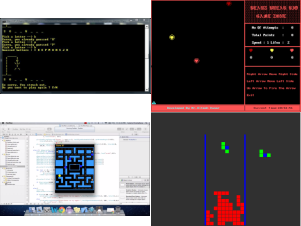

History
Before there was a C++ program there a program
called C. The C programming language was introduced by
Denis Ritchie at the AT &T’s Bell Laboratories USA in
1972. This C program was implemented for the first time
in DEC PDP-11 computer. Denise Ritchie developed these
concepts by using BCPL and B to implement the C language.
In addition, he added data typing along with significant
features.
In 1979 Bjarne Stroustrup, who was at the time
working in his Ph.D. thesis, developed the C++ program.
Using Simula, which was the first language to support
OOP paradigm, Bjarne Stroustrup was fascinated with the
idea of implementing this paradigm in software development.
As a result the Simula language was to slow to use,
where Stroustrup turned to the language C, working with
classes. Stroustrup intention for this new language was
for it to have object-oriented paradigm mixed with features
of C.
In 1983, it was named C++ and it included some add-on
features such as classes, inheritance, in-lining, default
function arguments,polymorphism, encapsulation and strong
type checking.
The first commercial edition of C++ programming language
was released in October 1985.
Projects
Companies
- Microsoft
- Oracle
- Mozilla
- Evernote
- Opera
- PayPal